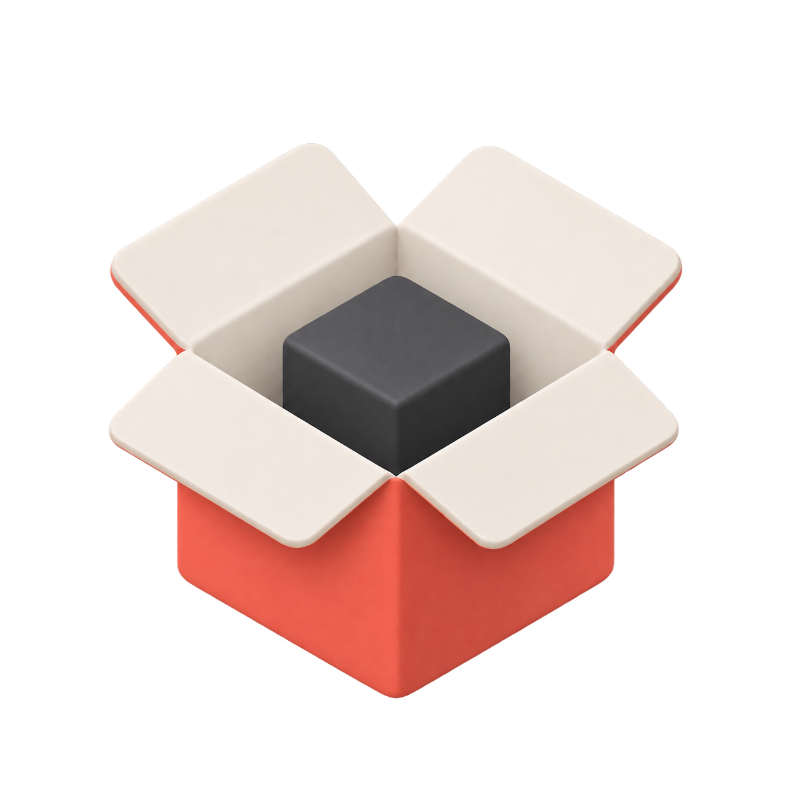

lilbox
An outer sandbox for coding agents.
Install lilbox
macOS & Linux · ARM64 & x86_64curl -fsSL https://mo.town/lilbox/install.sh | sh
Installs to ~/.local/bin. Linux requires bubblewrap. Install details
lilbox is a small defense in depth tool that runs coding agents and other commands inside an OS sandbox. It's meant to be used along with your agent’s own sandbox and other isolation mechanisms. [ Why outer sandboxes? ]
Configure and Run
Prompt your favourite coding agent to create a sandbox profile.
Read ~/.config/lilbox/AGENTS.md and create a new lilbox profile to run Claude Code with sane defaults for this git repository.
Creates a new profile in ./.lilbox/profile.toml
Start your agent in an outer sandbox.
lilbox claude
Starts Claude Code in a lilbox outer sandbox using above profile.
Why outer sandboxes?
- Coding agents like Claude and Codex can run tools and other subcommands in local sandboxes while the agents themselves remain unsandboxed.
- This can leave sensitive data, such as private keys, control sockets, or personal files exposed.
- Worse, this data can be accidentally or maliciously shared with model providers or third parties through context data, tool calls, or code blocks. It can also be stored in agent memory for long periods of time.
lilboxadds a thin but firm layer of protection around sensitive data, reducing the risk from incorrect auto-approvals or approval fatigue.lilboxuses native OS sandboxing to create lightweight outer sandboxes. It is not a replacement for containers or VMs.lilboxis particularly useful for running new, untrusted, or experimental models or coding harnesses.- Obligatory: there is no perfect security. Handle with care.